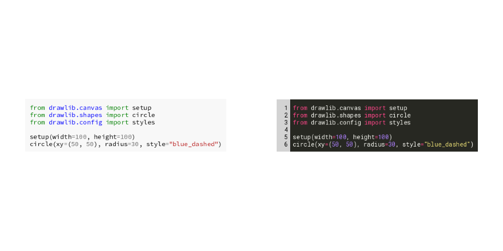
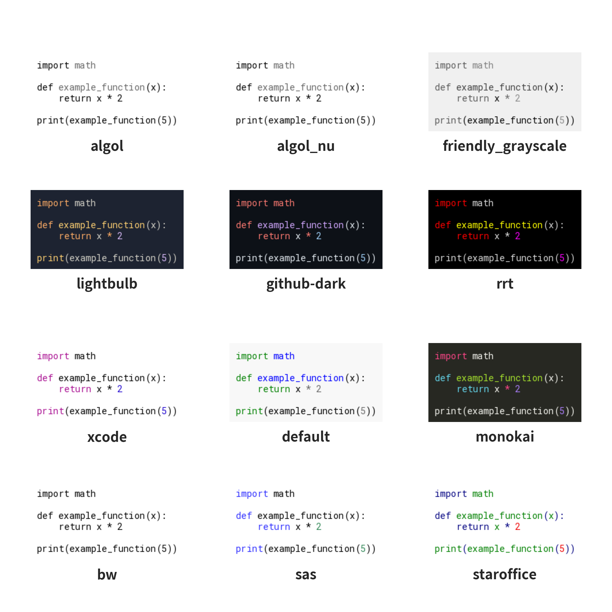
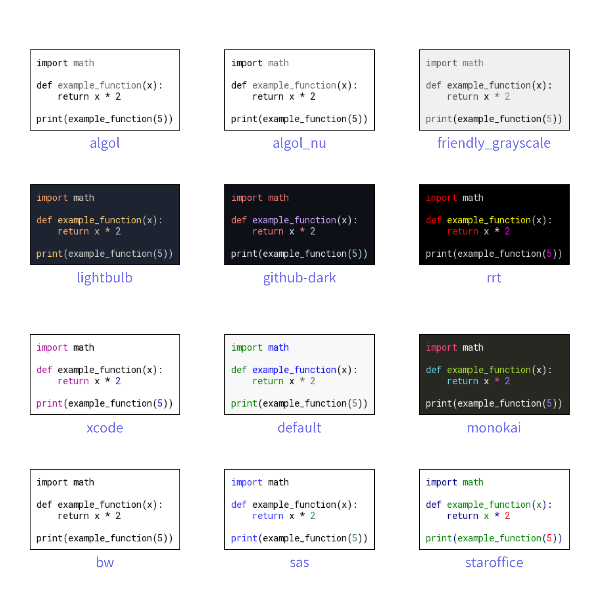

========================
SourceCode
Drawing source code with Drawlib can be done simply using the text() function with halign="left" and a monospace font.
For more sophisticated source code visuals, including syntax highlighting, Drawlib provides the SourceCode Smart Art feature.
This feature leverages pygments to generate visually enhanced source code images.
Here is an example of code:
from drawlib.canvas import config, save
from drawlib.colors import Colors, Colors140
from drawlib.fonts import FontSourceCode
from drawlib.shapes import circle
from drawlib.smartarts import SourceCode
from drawlib.types import Style
CODE = """
config(width=100, height=100)
circle(
xy=(50, 50),
radius=30,
style=Style(
line_style="dashed",
line_color=Colors140.BlueViolet,
line_width=5,
fill_color=Colors140.Turquoise,
),
)
save()
""".strip()
config(width=100, height=50)
sc1 = SourceCode(
language="python",
style="default",
)
sc1.draw((25, 25), width=40, code=CODE)
sc2 = SourceCode(
style="monokai",
font=FontSourceCode.ROBOTO_MONO,
show_linenum=True,
linenum_textcolor=Colors140.Black,
linenum_bgcolor=Colors140.LightGray,
)
sc2.draw((75, 25), width=40, code=CODE, style=Style(line_width=2, line_color=Colors.Red))
save()

In the example above, the SourceCode instance is configured with options such as:
- language: Specifies the programming language (automatically detected if not provided).
- style: Defines the syntax highlighting style (e.g., monokai).
- font: Source code font
- show_linenum: Determines whether to display line numbers.
- linenum_textcolor and linenum_bgcolor: Customize the colors of line numbers.
After creating instance, you will draw code with draw() method.
This method's arg is same to image().
But it takes code argument instead of image argument.
Here is a list of draw() arguments:
- xy: Coordinates to place the source code image.
- width: Width of the source code image.
- code: The source code string.
- style: Style for source code image
Executing the code will generate below output:
from drawlib.canvas import config, save
from drawlib.colors import Colors, Colors140
from drawlib.fonts import FontSourceCode
from drawlib.shapes import circle
from drawlib.smartarts import SourceCode
from drawlib.types import Style
CODE = """
config(width=100, height=100)
circle(
xy=(50, 50),
radius=30,
style=Style(
line_style="dashed",
line_color=Colors140.BlueViolet,
line_width=5,
fill_color=Colors140.Turquoise,
),
)
save()
""".strip()
config(width=100, height=50)
sc1 = SourceCode(
language="python",
style="default",
)
sc1.draw((25, 25), width=40, code=CODE)
sc2 = SourceCode(
style="monokai",
font=FontSourceCode.ROBOTO_MONO,
show_linenum=True,
linenum_textcolor=Colors140.Black,
linenum_bgcolor=Colors140.LightGray,
)
sc2.draw((75, 25), width=40, code=CODE, style=Style(line_width=2, line_color=Colors.Red))
save()

image1.png
Source Code Styles
Drawlib supports a variety of styles from Pygment's recommended list, as well as additional black and white styles. Here are list of supported styles:
- bw
- sas
- staroffice
- xcode
- default
- monokai
- lightbulb
- github-dark
- rrt
- algol
- algol_nu
- friendly_grayscale
Here are output of Source Code styles.
from drawlib.canvas import config, save
from drawlib.fonts import FontSourceCode
from drawlib.smartarts import SourceCode
from drawlib.text import text
from drawlib.types import Style
CODE = """
import math
def example_function(x):
return x * 2
print(example_function(5))
""".strip()
config(width=100, height=100, dpi=200)
xs = [17.5, 50, 82.5]
ys = [15, 37.5, 62.5, 85]
ix = 0
iy = 0
for style in [
"bw",
"sas",
"staroffice",
"xcode",
"default",
"monokai",
"lightbulb",
"github-dark",
"rrt",
"algol",
"algol_nu",
"friendly_grayscale",
]:
sc = SourceCode(
language="python",
style=style,
font=FontSourceCode.ROBOTO_MONO,
)
x = xs[ix]
y = ys[iy]
sc.draw(xy=(x, y), width=25, code=CODE, style=Style(line_width=1))
text((x, y - 9), text=style)
if ix == len(xs) - 1:
ix = 0
iy += 1
else:
ix += 1
save()

image2.png
get_text()
To retrieve the text content directly from a code file, you can use the SourceCode.get_text() method provided by SourceCode.
This function allows you to specify a file path relative to the code file's location.
© 2026 drawlib by Yuichi Ito. Released under the Apache 2.0 License.